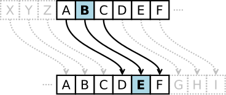

P1 - Introducción a Python
❓Preguntas
¿Cuál es el resultado de
int(True)y deint(False)?1 is True,bool(1) is True,2 == True,bool(2) is True.¿Cuál es el resultado de las siguientes expresiones? ¿Por qué?
False or not Falsenot (True and True)not True and True"True" != True10 > 5 + 3None is None[] is []
Complete la siguiente tabla indicando si el nombre es válido para una variable de Python.
Nombre ¿Válido? Justificación balancebalanceActualbalance-actualbalance actualbalance_actual0cuentacuenta0_cuentaSPAMcantidad$¿Cuál es el resultado de
len([])? ¿Y qué pasa si se intenta hacer lo siguiente?l = [] l[0]¿Por qué?
¿Cuál es el problema con el siguiente programa? Proponga una solución.
numero = 10 if numero < 0: print(f"El numero {numero} es negativo") elif numero < -5: print(f"El numero {numero} es menor a -5") elif numero > 0: print(f"El numero {numero} es positivo") else: print(f"El numero {numero} es 0")
🛠️ Ejercicios
Calculadora de área
Escriba un script de Python llamado
calcular_area.pyque reciba el radio de un círculo y devuelva su área.Calculadora de variación porcentual
Construya un programa que calcule cómo ha variado un precio de un producto o servicio a lo largo de una o varias semanas.
El programa debe pedir al usuario:
- Precio inicial
- Precio final
- Cantidad de semanas entre precios.
E imprimir un mensaje que incluya la variación porcentual entre periodos y una variación porcentual anualizada.
Calculadora de retenciones
Escriba una función que calcule el monto destinado a retenciones según el tipo de producto y la cantidad de toneladas producidas. La función debe recibir como parámetros el nombre del producto y la cantidad de toneladas, y devolver la cantidad total que corresponde a las retenciones.
Considere que las tasas de retención varían según el producto, como se muestra en la siguiente tabla:
Producto Retención Soja 33% Trigo 12% Maiz 12% Sorgo 12% Girasol 7% Por ejemplo, si la función recibe
producto="maiz"ycantidad=295, el resultado debe ser35.4.Calculadora de precios
Escriba una función llamada
calcular_precioque tome la cantidad de kilogramos de un producto y el precio por kilogramo como argumentos, y calcule el precio total a pagar. Si la cantidad de kilogramos es superior a 500, se aplicará un descuento del 10% sobre el precio total, y si la cantidad es superior a 2000 se aplicará un descuento del 15%.Índice de precios
Se cuenta con la serie mensual del Índice de Precios al Consumidor (IPC) del año 2024:
ipc_2024 = [20.6, 13.2, 11.0, 8.8, 4.2, 4.6, 4.0, 4.2, 3.5, 2.7, 2.4, 2.7]Realice los siguientes cálculos y análisis:
- Determine el menor y el mayor índice reportado durante el año.
- Calcule el IPC promedio mensual del 2024.
- Encuentre la diferencia entre el IPC mínimo y máximo del año.
- ¿En qué mes se registró la inflación más alta?
- Calcule la inflación mediana del 2024.
- ¿Cómo podría calcular el rango del IPC (diferencia entre el valor máximo y mínimo) sin usar las funciones
min()nimax()?
Resúmenes estadísticos
Cree funciones que, dada una lista de números, calculen los siguientes resúmenes estadísticos:
La media \[ \text{media}(X) = \frac{1}{n}\sum_{i=1}^n{x_i} \]
El rango \[ \text{rango}(X) = \text{max}(X) - \text{min}(X) \]
La varianza \[ \text{var}(X) = \frac{1}{n}\sum_{i=1}^n{(x_i - \bar{x})^2} \]
El desvío estándar \[ \text{sd}(X) = \sqrt{\text{var}(X)} \]
La mediana \[ \begin{array}{lr} \text{mediana}(X) = x_{(\frac{n + 1}{2})} & \text{Si } n \text{ es impar} \\ \text{mediana}(X) = \frac{x_{(\frac{n}{2})} + x_{(\frac{n}{2}+1)}}{2} & \text{Si } n \text{ es par} \end{array} \]
donde los \(x_{(i)}\) están ordenados de manera ascendente.
Potencias
Escriba una función que reciba un número entero
ny una potencia máximab. La función debe calcular las potencias dendesde \(n^1\) hasta \(n^b\). Primero, implemente la función para que devuelva todas las potencias en una lista. Luego, modifique la función para que devuelva cada potencia como un valor separado. Reflexione sobre las diferencias entre devolver una lista (un único objeto que contiene todos los resultados) y devolver múltiples valores separados.Persiguiendo la meta
En el Parque Independencia, la pista de atletismo del Estadio Municipal tiene una longitud de 400 metros. Lucio, un atleta rosarino, se estuvo preparando intensamente para una competencia de 400 los metros llanos.
En su cuenta de Instagram, Lucio publicó una historia que decía:
“20 días, 100 kilómetros, 1 objetivo.”
Parte 1: Análisis inicial
Con base en esta información, responde las siguientes preguntas:
- ¿Cuántos metros corrió Lucio por día en promedio?
- ¿Cuántas vueltas completas dio por día en promedio? ¿Le sobró algún metro? ¿Cuántos?
- ¿Cuántas vueltas completas dio en total durante los 20 días?
Parte 2: Planificando el entrenamiento
Lucio está diseñando un plan de entrenamiento para su próxima competencia. Quiere saber cuántas vueltas dará en promedio por día y cuántas vueltas completará en total al final de su entrenamiento.
Escribe un programa que reciba:
- Días de entrenamiento (un número entero).
- Cantidad de metros a correr por día (un número entero).
Y que devuelva:
- Vueltas completas promedio por día (en una pista de 400 metros).
- Vueltas completas totales al final del entrenamiento.
- Metros sobrantes por día, si los hay.
Parte 3: Plan de entrenamiento avanzado
Lucio quiere un programa más flexible para planificar su entrenamiento. Ahora, además de los días de entrenamiento, quiere poder ingresar la cantidad total de vueltas o la cantidad total de kilómetros que planea correr.
Escribe un programa que reciba:
- Días de entrenamiento (un número entero).
- Cantidad total de vueltas o cantidad total de kilómetros (el usuario debe elegir una de las dos opciones).
Y que devuelva:
- Cantidad de metros y vueltas promedio por día.
- Cantidad total de metros y vueltas.
La física del rebote
Una pelota de goma es lanzada desde una altura inicial de 100 metros. Cada vez que toca el suelo, rebota alcanzando una altura equivalente a 3/5 de la altura desde la que cayó.
Escriba un programa que imprima una tabla mostrando las alturas alcanzadas por la pelota en cada uno de sus primeros 10 rebotes.
Luego, implemente este programa como una función que reciba dos parámetros:
- Altura inicial desde la que se lanza la pelota.
- Cantidad de rebotes que se desea calcular.
La función debe devolver una lista con las alturas alcanzadas en cada rebote.
Punto extra
Modifique la función para que considere un rebote como “significativo” solo si la altura alcanzada es mayor o igual a un valor mínimo especificado (por ejemplo, 1 centímetro).
Si la pelota no alcanza esta altura mínima en algún rebote, se considera que ha completado su aterrizaje y queda quieta. En este caso, la función debe devolver únicamente los valores correspondientes a los “rebotes significativos”
Validación de DNI
Crear una función que dada una cadena de caracteres verifique si se corresponde con un DNI.
Si es un DNI, devolver
True. Caso contrario, devolverFalso.A tener en cuenta:
- Algunos ejemplos de DNI válidos
- 39.979.127
- 39979127
- 4.497.785
- DNI no válidos
- 39,979,127
- 39-979-127
- 123456
- …
- Algunos ejemplos de DNI válidos
Un montón de plata
Una mañana ponés un billete en la vereda al lado del Monumento a la Bandera. A partir de ahí, cada día vas y duplicás la cantidad de billetes, apilándolos prolijamente. ¿Cuánto tiempo pasa antes de que la pila de billetes sea más alta que la del Monumento?
AyudaAlgunas constantes útiles para resolver el problema:
billete_grosor = 0.11 * 0.001 # grosor de un billete en metros altura_monumento = 70 # altura en metrosSugerencia: Usar un bucle
whilepara realizar el cálculo.Punto extra
Escribe una función que permita determinar la cantidad de días necesarios para superar cualquier altura arbitraria.
La conjetura de Collatz
La conjetura de Collatz dice:
Si tomamos un número natural cualquiera, su secuencia de Collatz termina llegando siempre al número 1.
Secuencia de Collatz:
- Si el número es par, se divide entre 2.
- Si el número es impar, se multiplica por 3 y se le suma 1.
\[ f(n) = \begin{cases} \displaystyle \frac{n}{2} & \text{si } n \text{ es par,} \\ \\ 3n + 1 & \text{si } n \text{ es impar.} \end{cases} \]
Escribir una función que calcule la secuencia de Collatz para un número natural cualquiera.
Ayuda- Utilizar bucle
while. - El bucle debe correr solo cuando el valor de la secuencia sigue siendo mayor a 1. Si es 1, hay que frenar.
- Insertar los elementos de la secuencia en una lista.
Adivina el número
Escriba un programa que implemente el clásico juego “Adivina el número”.
El programa debe:
- Tener un número secreto (entero) que el usuario debe adivinar.
- Solicitar al usuario que ingrese un número.
- Si el número ingresado no coincide con el número secreto:
- Informar si el número ingresado es mayor o menor que el número secreto.
- Pedir al usuario que intente nuevamente.
- Si el usuario adivina el número, el programa debe terminar mostrando un mensaje de felicitaciones.
AyudaPara generar números aleatorios enteros en un rango dado puede utilizar
randint()del módulorandom:import random random.randint(-100, 100) # Genera un número aleatorio entre -100 y 100Validador de contraseñas
Escriba un programa que solicite al usuario una contraseña y verifique que cumpla con las siguientes condiciones:
- Debe tener entre de 8 y 24 caracteres.
- Debe incluir letras, números y caracteres especiales (
@#$%^&*()).
Si la contraseña no es válida, el programa debe informar al usuario qué condición no se cumple y permitirle ingresar una nueva contraseña. El proceso se repite hasta que el usuario ingrese una contraseña válida o decida no continuar.
🧩 Problemas
Cifrado César
En criptografía, el cifrado César es una de las técnicas de cifrado más simples y más usadas.
Es un tipo de cifrado en el que una letra en el texto original es reemplazada por otra letra que se encuentra un número fijo de posiciones más adelante en el alfabeto.
Por ejemplo, con un desplazamiento de 3, la A sería sustituida por la D (situada 3 lugares a la derecha de la A), la B sería reemplazada por la E, etc.

Escriba una función, y luego un script, que permita cifrar y descifrar cadenas usando el cifrado César con un número arbitrario de posiciones.
Dos funciones incluidas con Python que pueden ser útiles para esta tarea son
ord(), que convierte caracteres numéricos a números, ychr(), que realiza la operación inversa.AyudaPara el cifrado de un único caracter:
- Definir un
desplazamiento, por ejemplo3. - Convertir el caracter a número usando
ord(). - Sumarle
desplazamiento. - Finalmente, convertirlo a caracter nuevamente utilizando
chr().
Y para el descifrado:
- Convertir el caracter a número.
- Restarle
desplazamiento. - Convertirlo a caracter nuevamente utilizando
chr().
Así, se debería recuperar el caracter definido al principio.
- Definir un
Generación de números aleatorios
Construya un programa en Python que genere una cantidad determinada de números aleatorios uniformes dentro de un rango definido por el usuario. El programa debe:
- Solicitar al usuario la cantidad de números a generar y los valores mínimo y máximo del rango.
- Generar los números aleatorios
- Guardar los números en un archivo de texto, uno por línea.
- Ofrecer la opción de mostrar un resumen estadístico con mínimo, máximo, media y desvío estándar, solo si el usuario lo solicita.
Para resolver este problema utilice el módulo
randomy las funciones desarrolladas en el ejercicio Resúmenes estadísticos guardadas en un módulo llamadoestadistica.py.Mensaje al descubierto
Resulta que Franco, un amigo que estudia Ciencias de la Computación en la FCEIA, te envía por WhatsApp un archivo de texto plano con mensajes “encriptados” usando caracteres sobrantes y símbolos extraños:
!!!,., aY??/u/DAM**e,, se =m!!e &&M&&e v!o!?LV...I.O /L/*oC/*o __?e_?l//+ T++**e/*Cl!?aD==*O**Tiene sentido pensar que está experimentando con nuevos algoritmos de cifrado y, de paso, te lanza el reto de descifrarlo.
Tu misión es escribir un programa que:
- Lea un archivo de texto plano cualquiera.
- Muestre en pantalla su contenido original (tal cual llega).
- Aplique un proceso de limpieza basado en las siguientes reglas:
- Eliminar todos los caracteres
+,*,-,/,=,!,?,&y_. - Reemplazar cualquier secuencia de espacios múltiples por un solo espacio.
- Homogeinizar la capitalización de los caracteres.
- Conservar los saltos de línea tal cual aparecen en el archivo original.
- Eliminar todos los caracteres
- Muestre en pantalla la versión desencriptada del texto.
- Guarde la versión limpia en un nuevo archivo de texto.
- El usuario debe poder especificar el nombre del archivo de salida.
- Si no lo hace, se generará uno con el sufijo
_limpioantes de la extensión original (por ejemplo,secreto.txt→secreto_limpio.txt).
Control interno (ELIMINAR)
- Bucles definidos y no definidos
- Estructuras de datos nativas de Python
- Uso de código externo (propio y de terceros).
Comentarios
Temas que no son necesarios de cubrir per se en la práctica:
- Expresiones
- Variables y asignación
- Módulos y librerías (cubierto en clases de teoría y de manera implícita en otros temas)
- Instalación y gestión de librerías (va a aparecer mucho más adelante).